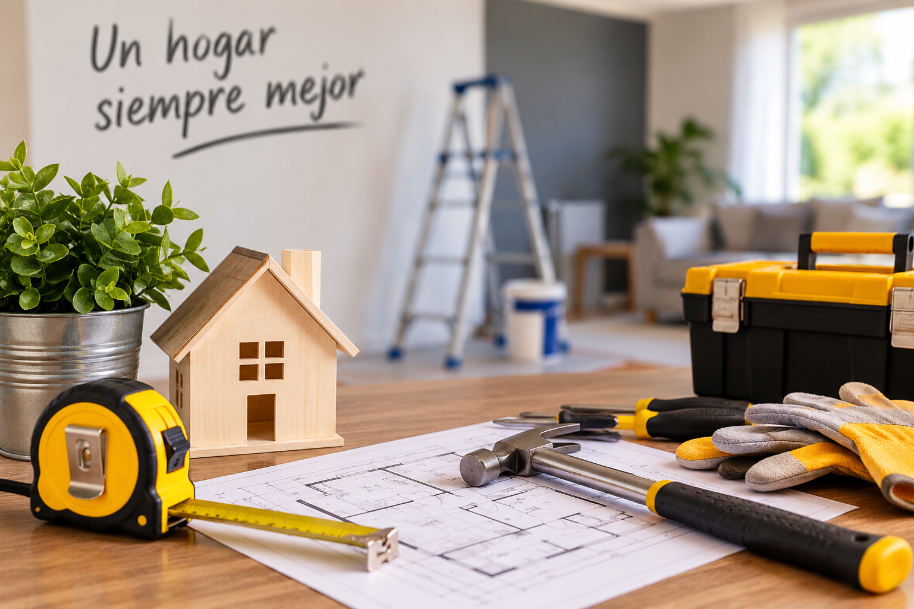

Consejos para mantener tu hogar en buen estado

Mantener una vivienda en buenas condiciones permite prevenir problemas y conservar sus espacios durante más tiempo.
Revisa periódicamente tu vivienda
Es recomendable revisar techos, canaletas, muros, puertas y ventanas para detectar oportunamente posibles daños o filtraciones. Una revisión periódica permite identificar problemas antes de que requieran reparaciones mayores.
Presta atención a la humedad
La humedad puede aparecer por filtraciones, problemas de ventilación o acumulación de agua. Mantener los espacios ventilados y revisar posibles entradas de agua ayuda a prevenir deterioros en muros y revestimientos.
Realiza mantenciones preventivas
No es necesario esperar a que algo se rompa para repararlo. Las mantenciones preventivas permiten conservar la vivienda en mejores condiciones y detectar desperfectos a tiempo.
En Construcciones Montero contamos con servicios de mantención, reparación y mejoramiento para ayudarte a mantener tu hogar en buenas condiciones.